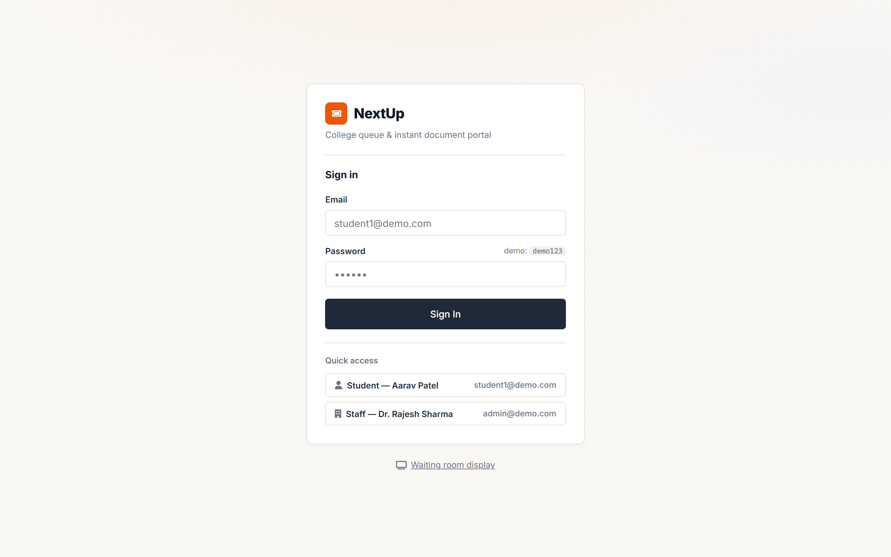
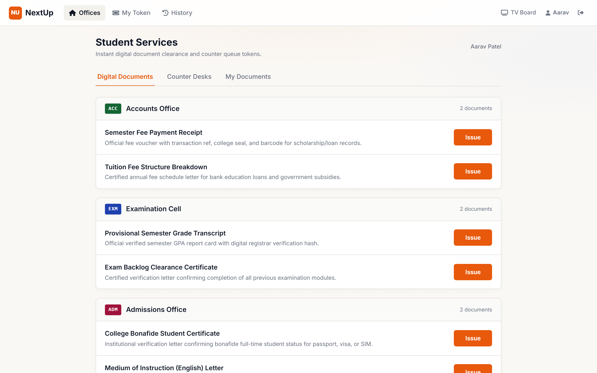
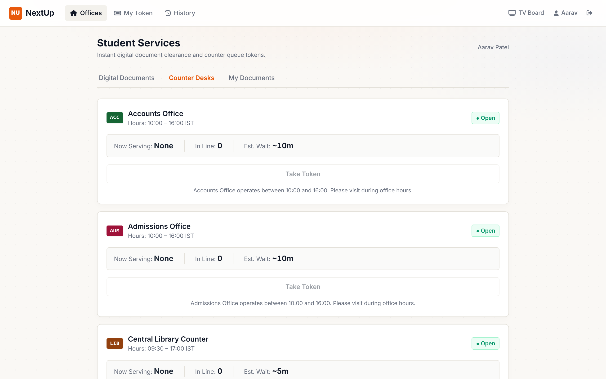
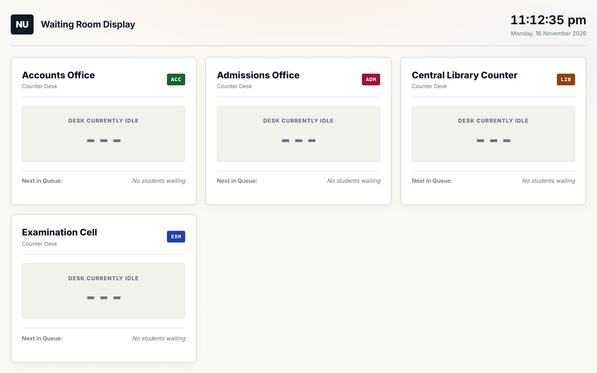
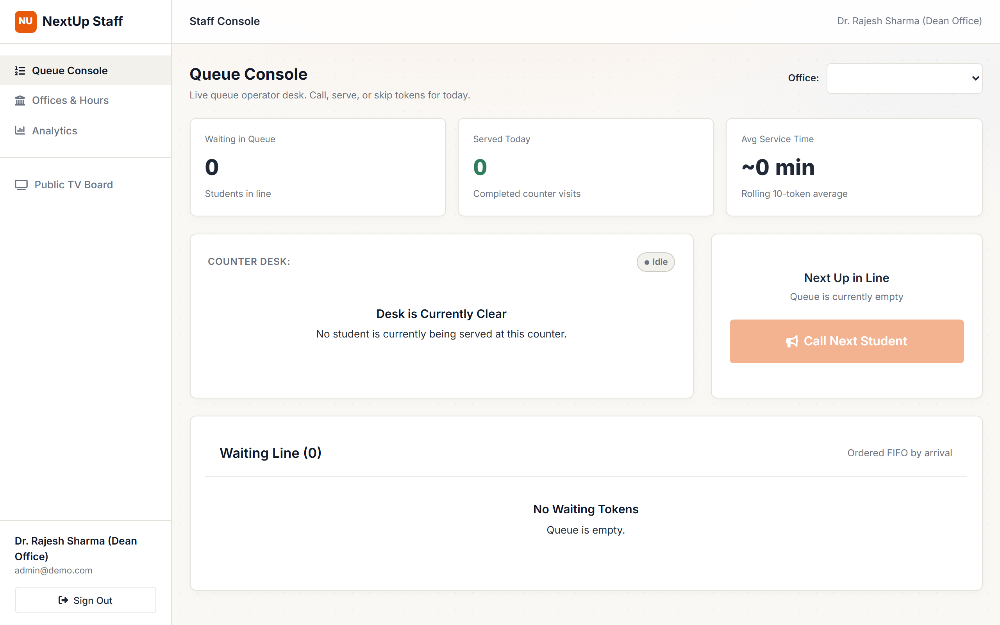
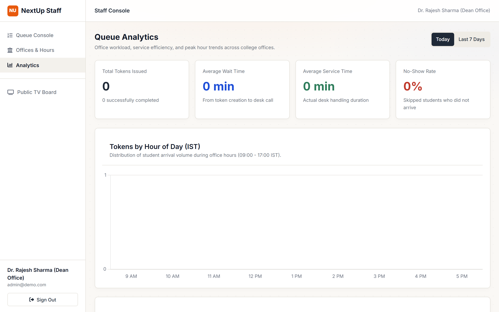
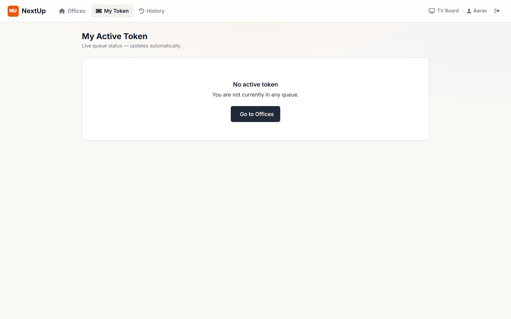
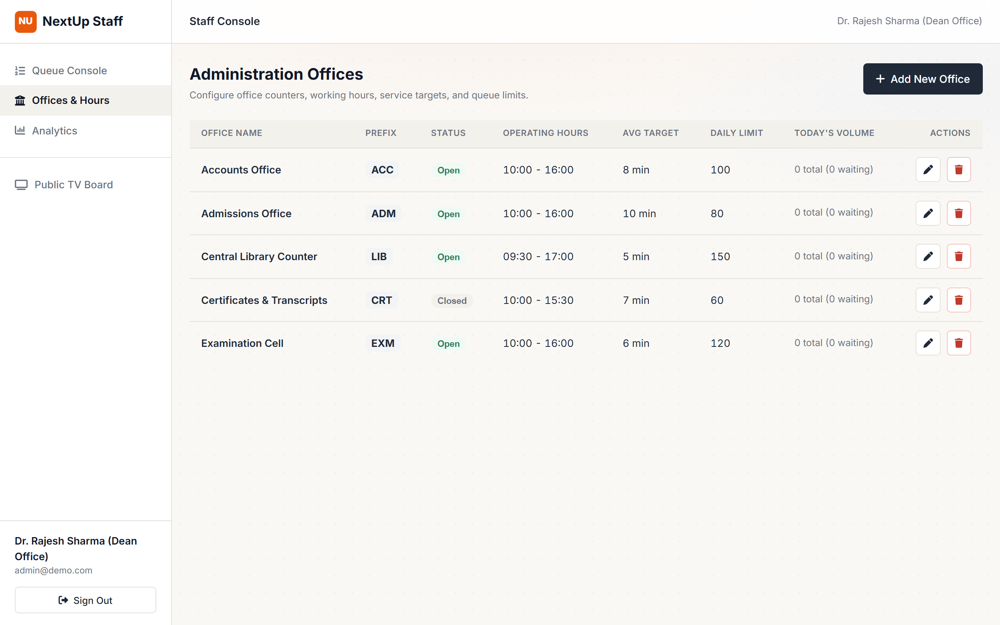

Digital Queue, Token Management & Instant Document Portal
Student: Swapnil Sahu
Program: BCA (AI & Data Science), Ajeenkya DY Patil University, Pune
Academic Year: 2026–27
Abstract
NextUp is a web application for college office queues and digital documents.
Students log in to take a numbered token (a slip that holds their place in line) for offices
that need a physical visit — Accounts, Examination Cell, Admissions, Library, or Certificates.
They can also download verified digital documents instantly, without visiting any counter.
Office staff use a separate console to call the next student, skip no-shows, and view analytics.
A public TV board shows live counter status. The application uses Next.js, Supabase (PostgreSQL),
and runs on Vercel.
Project at a Glance
Language
JavaScript (ES6+, no TypeScript)
Framework
Next.js 14 (App Router)
Database
Supabase (PostgreSQL)
Hosting
Vercel (serverless) + Supabase (managed database)
User Roles
Student · Admin (office staff)
Main Feature
Live token queue with real-time position + instant digital documents
NextUp — Digital Queue & Document PortalIntroduction
Introduction
Every semester, students at Indian colleges spend hours standing in queues at different office counters
— to pay fees, collect documents, or submit forms. There is no way to know how long the wait will be.
NextUp solves this by giving each student a numbered token (like a ticket) and showing their position
on screen in real time. For documents that do not need a physical visit, students can download a
verified PDF instantly.
The Problem
❌ Before (without the system)
✅ With NextUp
Students stand in long physical queues, unsure how long the wait is.
Students get a token and see their exact position on screen.
Staff have no way to track who is next or how many have been served.
Staff use a console to call next, complete, skip, or recall tokens.
Students visit the office only to discover the document is ready by email.
Digital documents (bonafide, fee receipts) are issued instantly online.
No data on peak hours or no-show rates for office planning.
Admin analytics show hourly traffic, average wait, and no-show rate.
Objectives
1
Replace physical queues with a digital token system.
2
Issue verified documents instantly without an office visit.
3
Give office staff a real-time console to manage the queue.
4
Show analytics so staff can plan staffing for peak hours.
Scope
✅ Included
5 college offices: ACC, EXM, ADM, LIB, CRT
Student login, token issuance, live position tracking
Digital document issuance (no counter visit needed)
NextUp — Digital Queue & Document PortalTechnology Stack
Technology Stack
Layer
Technology
Used For (what it does in this project)
Language
JavaScript ES6+
All server and browser code; no TypeScript used
Framework
Next.js 14 (App Router)
Pages, API routes, server-side rendering
Database
Supabase (PostgreSQL)
Stores users, tokens, services, documents
Login & Security
bcryptjs + jose JWTs
Password hashing; signed login tokens in cookies
Charts & UI
Chart.js + react-chartjs-2
Bar chart on the analytics dashboard
Icons
Font Awesome 6
All UI icons as inline SVG React components
Hosting
Vercel (serverless)
Deploys the Next.js app; each request runs a function
Local Demo DB
lib/mockDb.js (in-memory)
Auto-activates when no Supabase key is set
Dev Tools
Playwright
Browser automation for testing and screenshots
Deployment — 4-Step Process
📁
1. Code on GitHub
github.com/Epilougee/nextup
→
▲
2. Build on Vercel
Auto-builds on every git push
→
🐘
3. Database on Supabase
PostgreSQL; env key passed to Vercel
→
🌐
4. Live Website
Served globally via Vercel CDN
In simple words: Front end — the web pages you see in your browser (React components in app/). Back end — the API routes in app/api/ that read and write the database; they run on Vercel's servers, never in your browser. Database — Supabase stores all users, tokens, and documents; the back end is the only code that ever talks to it directly.
Why Polling Instead of WebSockets?
Vercel runs each request as a short-lived function (a serverless function).
WebSockets (a live two-way connection) need a server that stays open — Vercel's functions close immediately after each request.
So the app polls (asks the server every 4 seconds): "Any updates?"
It pauses automatically when the browser tab is hidden, saving network calls.
NextUp3 / 10
NextUp — Digital Queue & Document PortalSystem Design
System Design
User Roles
Student
Any enrolled student with a login account
Log in and view open offices
Take a physical counter token (one per office)
See live queue position and estimated wait time
Download verified digital documents instantly
View their token and document history
Admin (Office Staff)
Staff logged in with an admin account
View the full waiting list for any department
Call next token, mark it complete, or skip a no-show
In simple words: The browser shows the pages. It sends requests to the server.
The server runs the queue logic and reads/writes the database. The database stores everything permanently.
The browser never talks to the database directly — only the server does.
NextUp4 / 10
NextUp — Digital Queue & Document PortalDatabase
Database
Table
What it stores
users
All student and admin accounts. Password stored as a bcrypt hash (a scrambled version — never plain text).
services
The 5 college offices. Stores name, short prefix (ACC, EXM…), hours, and open/closed status.
tokens
Every physical counter token ever issued. Tracks status (waiting → serving → completed / no_show / cancelled) and timestamps.
digital_documents
Instantly-issued digital documents. Each has a unique reference number and stores the document content in a JSONB (flexible data) column.
In simple words: One user can have many tokens (one per day per office).
One service can receive many tokens and issue many documents.
Every token and every document knows which user and which service it belongs to — via a FK (foreign key: a link to another table's row).
NextUp5 / 10
NextUp — Digital Queue & Document PortalHow It Works
How It Works
Student Flow — Taking a Token
1
Log in (student account)
→
2
Go to Counter Desks tab
→
3
Pick an office and take a token
→
4
See live position and wait time
→
5
Get alerted when nearly called
→
6
Visit counter when called
Student Flow — Getting a Digital Document
1
Log in
→
2
Go to Get Docs tab
→
3
Pick a document (e.g. Bonafide)
→
4
System issues it instantly
→
5
Download PDF with reference no.
Admin Flow — Managing the Queue
1
Log in (admin account)
→
2
Select a department
→
3
See who is now serving
→
4
Click "Call Next"
→
5
Mark done or skip no-show
→
6
TV board updates automatically
Main Modules
lib/queueEngine.js
All token and wait-time calculations
lib/auth.js
Login, JWT creation and verification
lib/departmentCatalog.js
List of all services, digital vs physical
lib/mockDb.js
In-memory database for demos without Supabase
app/page.js
Student home: 3 tabs, Get Docs, Counter, My Docs
app/my-token/page.js
Live token card with position and alert banner
app/admin/queue/page.js
Admin queue console: call, complete, skip, recall
app/admin/analytics/page.js
Bar chart and 4 summary metric cards
app/display/page.js
Public TV board, no login required
components/usePolling.js
Shared hook: polls API every 4 seconds
NextUp6 / 10
NextUp — Digital Queue & Document PortalCore Logic
How the Queue Engine Works
lib/queueEngine.js contains all queue decisions as pure functions (functions that always
give the same output for the same input, with no side effects).
It runs on the server — never in the browser.
Worked Example — Real Seed Data
Input
Check
Result
Aarav Patel takes a token at Accounts Office (ACC). Today already has 4 tokens.
canTakeToken(): office is open, hours ok, no existing active token for Aarav.
Token ACC-005 created. Status: waiting.
ACC-004 is serving. Aarav (ACC-005) is 1st in the waiting list.
getPosition(): sorted by created_at, Aarav's token is index 0 → position 1. estimateWaitMinutes(1, 8): 1×8 = 8 → rounded up to nearest 5 → 10 min.
Screen shows: Position 1 · ~10 min wait.
Admin calls next. ACC-005 becomes serving.
getAlertLevel(0, 'serving'): status is 'serving' → returns 'now'.
Aarav sees amber alert: "Your token is now being called — go to the counter!"
Everyday analogy: It works like a bakery number ticket — you take a slip, watch the display, and go up only when your number is called.
Code Snippet (from lib/queueEngine.js)
// Wait time = position × average minutes, rounded up to nearest 5
export function estimateWaitMinutes(position, avgMinutes = 8) {
if (!position || position <= 0) return 0;
const rawWait = position * avgMinutes; // e.g. 1 × 8 = 8
return Math.max(5, Math.ceil(rawWait / 5) * 5); // → 10 minutes
}
// Alert level: 'now' if serving, 'near' if top 3 in line, 'none' otherwise
export function getAlertLevel(position, status) {
if (status === 'serving') return 'now';
if (status === 'waiting' && position >= 1 && position <= 3) return 'near';
return 'none';
}
NextUp7 / 10
NextUp — Digital Queue & Document PortalScreenshots — Part 1
Screenshots — Part 1

Figure 1 — Login page. Students and staff sign in with email and password. One-click demo logins fill the form automatically. A link to the public TV board is shown below the form.

Figure 2 — Student Home (Get Docs tab). Shows all five departments. Students pick a digital document and download it instantly with no office visit.

Figure 3 — Counter Desks tab. Shows live queue depth and open/closed status for each office. Students tap "Take Token" to join the queue.
NextUp8 / 10
NextUp — Digital Queue & Document PortalScreenshots — Part 2
Screenshots — Part 2

Figure 4 — TV Display Board (/display). Public screen for the waiting room. Shows the token being served at each counter and the next two in line. No login needed. Live IST wall clock updates every second.

Figure 5 — Admin Queue Console. Staff see the now-serving token and the full waiting list. Buttons: Call Next, Complete, Skip (no-show), Recall.

Figure 6 — Analytics Dashboard. Shows total tokens, avg wait, avg service time, and no-show rate. Bar chart displays 7-day hourly traffic with an 11 AM peak from seed data.

Figure 7 — My Token. Aarav holds ACC-005, position 1, ~10 min wait. Alert banner turns amber when top 3 in line.

Figure 8 — Admin Services. Staff can open or close any department counter with a toggle. CRT (Certificates) is shown as closed in the demo.
NextUp9 / 10
NextUp — Digital Queue & Document PortalTesting & Conclusion
Testing, Limitations & Conclusion
Test Cases — Run Against Live App at localhost:3001
#
Action
Expected
Actual Result
✓
T1
Login: student1@demo.com / demo123
Redirect to student home
Redirected to / with "Aarav Patel" in header
Pass
T2
Login with wrong password
Error shown, no redirect
"Invalid email or password" banner displayed
Pass
T3
Student opens Counter Desks tab
Live queue counts shown per office
All 5 offices listed with token counts and status
Pass
T4
Open /display without login
TV board loads — no auth needed
Display board loaded with ACC/ADM/EXM/LIB counters
Pass
T5
Admin logs in and clicks Call Next
Next waiting token moves to serving
Next token shown in Now Serving card, status updated
Pass
T6
Student visits /admin/queue directly
Redirected away (no admin access)
Redirected to / (student home)
Pass
Limitations
Polling (not WebSockets) — up to 4-second lag in updates.
Digital documents use static templates, not a real college ERP.
Only one counter per department — no parallel serving.
Future Scope
SMS/push alerts when token is about to be called.
Connect to real student database for verified records.
Multiple counters per department with separate queues.
Conclusion
NextUp replaces physical queues with a digital token system and instant document issuance.
It was built entirely with open-source tools — Next.js, Supabase, bcryptjs, Chart.js — and deployed for free on Vercel.
The queue engine in lib/queueEngine.js is clean, testable, and separate from the UI, which made it straightforward to verify every calculation.